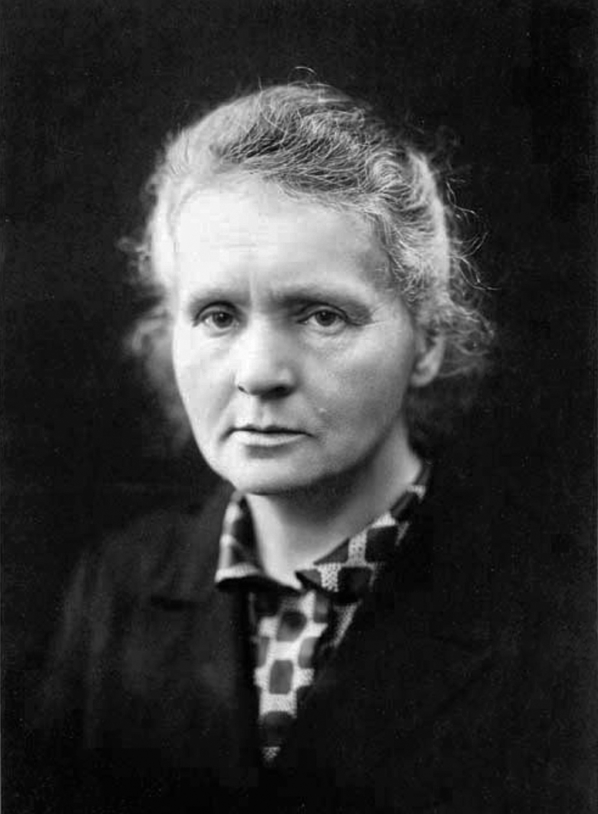

<!doctype html><html lang="zh-CN"><meta charset="utf-8"><title>Marie Curie</title><style>
*{box-sizing:border-box}body{margin:0}#infographic{position:relative;width:1200px;height:900px;padding:60px;background:#fff;color:#111;font-family:Arial,sans-serif}
h1{font-size:64px;margin:0 0 30px}.photo{width:300px;height:400px;object-fit:cover;position:absolute;right:60px;top:180px}p{width:650px;font-size:32px;line-height:1.5}.number{font-size:96px;margin:0}footer{position:absolute;left:60px;bottom:100px;font-size:14px}
</style><main id="infographic"><h1 data-required="name" data-display-id="name">玛丽·居里</h1>
<p class="number" data-required="count" data-display-id="count">2</p><p data-required="unit" data-display-id="unit">次诺贝尔奖</p>
<p data-required="scope" data-display-id="scope">1903 年物理学奖；1911 年化学奖</p>
<footer data-required="note" data-display-id="note">奖项份额不代表科研贡献比例。</footer></main><script>window.__INFOGRAPHIC_READY__=true;</script></html>